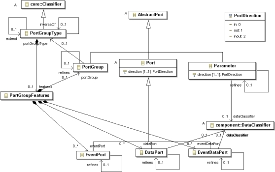

Previous
Next
Previous
Next 
| 4.8 Port Group Types |
The PortGroupType class is a concrete subclass
of the Classifier class as illustrated in Figure 24.
A PortGroupType class has an extends reference association and an inverseOf reference
association to objects of the same class. Similar to a component type, it contains a features
subclause that is represented by the PortGroupFeatures class. The PortGroupFeatures
class has
containment associations to the DataPort, EventPort, EventDataPort, and PortGroup
classes. The
specific class name is reflected in the association label resulting in its use as XML element tag.

Figure 24 Port Group Type